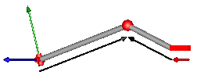
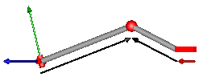

The joints in this package are mainly designed to be used in kinematic loop structures. Every component consists of 3 elementary joints. These joints are combined in such a way that the kinematics of the 3 joints between frame_a and frame_b are computed from the movement of frame_a and frame_b, i.e., there are no constraints between frame_a and frame_b. This requires to solve a non-linear system of equations which is performed analytically (i.e., when a mathematical solution exists, it is computed efficiently and reliably). A detailed description how to use these joints is provided in MultiBody.UsersGuide.Tutorial.LoopStructures.AnalyticLoopHandling.
The assembly joints in this package are named JointXYZ where XYZ are the first letters of the elementary joints used in the component, in particular:
| P | Prismatic joint |
| R | Revolute joint |
| S | Spherical joint |
| U | Universal joint |
For example, JointUSR is an assembly joint consisting of a universal, a spherical and a revolute joint.
This package contains the following models:
| Model | Description |
|---|---|
| JointUPS | Universal - prismatic - spherical joint aggregation
|
| JointUSR | Universal - spherical - revolute joint aggregation
|
| JointUSP | Universal - spherical - prismatic joint aggregation  |
| JointSSR | Spherical - spherical - revolute joint aggregation
with an optional mass point at the rod connecting
the two spherical joints
|
| JointSSP | Spherical - spherical - prismatic joint aggregation
with an optional mass point at the rod connecting
the two spherical joints
|
| JointRRR | Revolute - revolute - revolute joint aggregation for planar loops
|
| JointRRP | Revolute - revolute - prismatic joint aggregation for planar loops
|
Note, no component of this package has potential states, since the components are designed in such a way that the generalized coordinates of the used elementary joints are computed from the frame_a and frame_b coordinates. Still, it is possible to use the components in a tree structure. In this case states are selected from bodies that are connected to the frame_a or frame_b side of the component. In most cases this gives a less efficient solution, as if elementary joints of package Modelica.Mechanics.MultiBody.Joints would be used directly.
The analytic handling of kinematic loops by using joint aggregations with 6 degrees of freedom as provided in this package, is a new methodology. It is based on a more general method for solving non-linear equations of kinematic loops developed by Woernle and Hiller. An automatic application of this more general method is difficult, and a manual application is only suited for specialists in this field. The method introduced here is a compromise: It can be quite easily applied by an end user, but for a smaller class of kinematic loops. The method of the "characteristic pair of joints" from Woernle and Hiller is described in:
Extends from Modelica.Icons.Package (Icon for standard packages).
| Name | Description |
|---|---|
JointRRP | Planar revolute - revolute - prismatic joint aggregation (no constraints, no potential states) |
JointRRR | Planar revolute - revolute - revolute joint aggregation (no constraints, no potential states) |
JointSSP | Spherical - spherical - prismatic joint aggregation with mass (no constraints, no potential states) |
JointSSR | Spherical - spherical - revolute joint aggregation with mass (no constraints, no potential states) |
JointUPS | Universal - prismatic - spherical joint aggregation (no constraints, no potential states) |
JointUSP | Universal - spherical - prismatic joint aggregation (no constraints, no potential states) |
JointUSR | Universal - spherical - revolute joint aggregation (no constraints, no potential states) |
This component consists of a universal joint at frame_a, a spherical joint at frame_b and a prismatic joint along the line connecting the origin of frame_a and the origin of frame_b, see the default animation in the following figure (the axes vectors are not part of the default animation):
This joint aggregation has no mass and no inertia and introduces neither constraints nor potential state variables. It is especially useful to build up more complicated force elements where the mass and/or inertia of the force element shall be taken into account.
The universal joint is defined in the following way:
The definition of axis 2 of the universal joint is performed according to the most often occurring case. In a future release, axis 2 might be explicitly definable via a parameter. However, the treatment is much more complicated and the number of operations is considerably higher, if axis 2 is not orthogonal to axis 1 and to the connecting rod.
Note, there is a singularity when axis 1 and the connecting line are parallel to each other. Therefore, if possible n1_a should be selected in such a way that it is perpendicular to nAxis_ia in the initial configuration (i.e., the distance to the singularity is as large as possible).
An additional frame_ia is present. It is fixed on the line connecting the universal and the spherical joint at the origin of frame_a. The placement of frame_ia on this line is implicitly defined by the universal joint (frame_a and frame_ia coincide when the angles of the two revolute joints of the universal joint are zero) and by parameter vector nAxis_ia, an axis vector directed along the line from the origin of frame_a to the spherical joint, resolved in frame_ia.
An additional frame_ib is present. It is fixed in the line connecting the prismatic and the spherical joint at the origin of frame_b. It is always parallel to frame_ia.
Note, this joint aggregation can be used in cases where in reality a rod with spherical joints at each end are present. Such a system has an additional degree of freedom to rotate the rod along its axis. In practice this rotation is usually of no interest and is mathematically removed by replacing one of the spherical joints by a universal joint.
The easiest way to define the parameters of this joint is by moving the MultiBody system in a reference configuration where all frames of all components are parallel to each other (alternatively, at least frame_a, frame_ia and frame_ib of the JointUSP joint should be parallel to each other when defining an instance of this component).
Extends from Modelica.Mechanics.MultiBody.Interfaces.PartialTwoFramesDoubleSize (Base model for components providing two frame connectors + outer world + assert to guarantee that the component is connected (default icon size is factor 2 larger as usual)).
| Type | Name | Default | Description |
|---|---|---|---|
Boolean | animation | true | = true, if animation shall be enabled |
Boolean | showUniversalAxes | true | = true, if universal joint shall be visualized with two cylinders, otherwise with a sphere (provided animation=true) |
Axis | n1_a[3] | {0, 0, 1} | Axis 1 of universal joint resolved in frame_a (axis 2 is orthogonal to axis 1 and to line from universal to spherical joint) |
Position | nAxis_ia[3] | {1, 0, 0} | Axis vector along line from origin of frame_a to origin of frame_b, resolved in frame_ia |
Position | s_offset | 0 | Relative distance offset (distance between frame_a and frame_b = s(t) + s_offset) |
Diameter | sphereDiameter | world.defaultJointLength | Diameter of spheres representing the spherical joints |
Diameter | axisDiameter | sphereDiameter / Types.Defaults.JointRodDiameterFraction | Diameter of cylinder on the connecting line from frame_a to frame_b |
Distance | cylinderLength | world.defaultJointLength | Length of cylinders representing the two universal joint axes |
Distance | cylinderDiameter | world.defaultJointWidth | Diameter of cylinders representing the two universal joint axes |
Boolean | checkTotalPower | false | = true, if total power flowing into this component shall be determined (must be zero) |
final Real | eAxis_ia[3] | Modelica.Math.Vectors.normalizeWithAssert(nAxis_ia) | Unit vector from origin of frame_a to origin of frame_b, resolved in frame_ia |
final Real | e2_ia[3] | Modelica.Math.Vectors.normalizeWithAssert(cross(n1_a, eAxis_ia)) | Unit vector in direction of second rotation axis of universal joint, resolved in frame_ia |
final Real | e3_ia[3] | cross(eAxis_ia, e2_ia) | Unit vector perpendicular to eAxis_ia and e2_ia, resolved in frame_ia |
| Type | Name | Description |
|---|---|---|
Frame_a | frame_a | Coordinate system fixed to the component with one cut-force and cut-torque |
Frame_b | frame_b | Coordinate system fixed to the component with one cut-force and cut-torque |
Frame_a | frame_ia | Coordinate system at origin of frame_a fixed at prismatic joint |
Frame_b | frame_ib | Coordinate system at origin of frame_b fixed at prismatic joint |
Flange_a | axis | 1-dim. translational flange that drives the prismatic joint |
Flange_b | bearing | 1-dim. translational flange of the drive bearing of the prismatic joint |
This component consists of a universal joint at frame_a, a revolute joint at frame_b and a spherical joint which is connected via rod1 to the universal and via rod2 to the revolute joint, see the default animation in the following figure (the axes vectors are not part of the default animation):
This joint aggregation has no mass and no inertia and introduces neither constraints nor potential state variables. It should be used in kinematic loops whenever possible since the non-linear system of equations introduced by this joint aggregation is solved analytically (i.e., a solution is always computed, if a unique solution exists).
The universal joint is defined in the following way:
The definition of axis 2 of the universal joint is performed according to the most often occurring case. In a future release, axis 2 might be explicitly definable via a parameter. However, the treatment is much more complicated and the number of operations is considerably higher, if axis 2 is not orthogonal to axis 1 and to the connecting rod.
Note, there is a singularity when axis 1 and the connecting rod are parallel to each other. Therefore, if possible n1_a should be selected in such a way that it is perpendicular to rRod1_ia in the initial configuration (i.e., the distance to the singularity is as large as possible).
The rest of this joint aggregation is defined by the following parameters:
An additional frame_ia is present. It is fixed in the rod connecting the universal and the spherical joint at the origin of frame_a. The placement of frame_ia on the rod is implicitly defined by the universal joint (frame_a and frame_ia coincide when the angles of the two revolute joints of the universal joint are zero) and by parameter vector rRod1_ia, the position vector from the origin of frame_a to the spherical joint, resolved in frame_ia.
An additional frame_ib is present. It is fixed in the rod connecting the revolute and the spherical joint at the side of the revolute joint that is connected to this rod (= rod2.frame_a = revolute.frame_a).
An additional frame_im is present. It is fixed in the rod connecting the revolute and the spherical joint at the side of the spherical joint that is connected to this rod (= rod2.frame_b). It is always parallel to frame_ib.
The easiest way to define the parameters of this joint is by moving the MultiBody system in a reference configuration where all frames of all components are parallel to each other (alternatively, at least frame_a and frame_ia of the JointUSR joint should be parallel to each other when defining an instance of this component).
In the public interface of the JointUSR joint, the following (final) parameters are provided:
parameter Real rod1Length(unit="m") "Length of rod 1"; parameter Real eRod1_ia[3] "Unit vector along rod 1, resolved in frame_ia"; parameter Real e2_ia [3] "Unit vector along axis 2, resolved in frame_ia";
This allows a more convenient definition of data which is related to rod 1. For example, if a box shall be connected at frame_ia directing from the origin of frame_a to the middle of rod 1, this might be defined as:
Modelica.Mechanics.MultiBody.Joints.Assemblies.JointUSP jointUSR(rRod1_ia={1.2, 1, 0.2});
Modelica.Mechanics.MultiBody.Visualizers.FixedShape shape(shapeType = "box",
lengthDirection = jointUSR.eRod1_ia,
widthDirection = jointUSR.e2_ia,
length = jointUSR.rod1Length/2,
width = jointUSR.rod1Length/10);
equation
connect(jointUSP.frame_ia, shape.frame_a);
Extends from Modelica.Mechanics.MultiBody.Interfaces.PartialTwoFramesDoubleSize (Base model for components providing two frame connectors + outer world + assert to guarantee that the component is connected (default icon size is factor 2 larger as usual)).
| Type | Name | Default | Description |
|---|---|---|---|
Boolean | animation | true | = true, if animation shall be enabled |
Boolean | showUniversalAxes | true | = true, if universal joint shall be visualized with two cylinders, otherwise with a sphere (provided animation=true) |
Axis | n1_a[3] | {0, 0, 1} | Axis 1 of universal joint fixed and resolved in frame_a (axis 2 is orthogonal to axis 1 and to rod 1) |
Axis | n_b[3] | {0, 0, 1} | Axis of revolute joint fixed and resolved in frame_b |
Position | rRod1_ia[3] | {1, 0, 0} | Vector from origin of frame_a to spherical joint, resolved in frame_ia |
Position | rRod2_ib[3] | {-1, 0, 0} | Vector from origin of frame_ib to spherical joint, resolved in frame_ib |
Angle_deg | phi_offset | 0 | Relative angle offset of revolute joint (angle = phi(t) + from_deg(phi_offset)) |
Angle_deg | phi_guess | 0 | Select the configuration such that at initial time |phi(t0) - from_deg(phi_guess)| is minimal |
Diameter | sphereDiameter | world.defaultJointLength | Diameter of the spheres representing the universal and the spherical joint |
Diameter | rod1Diameter | sphereDiameter / Types.Defaults.JointRodDiameterFraction | Diameter of rod 1 connecting the universal and the spherical joint |
Diameter | rod2Diameter | rod1Diameter | Diameter of rod 2 connecting the revolute and the spherical joint |
Diameter | revoluteDiameter | world.defaultJointWidth | Diameter of cylinder representing the revolute joint |
Distance | revoluteLength | world.defaultJointLength | Length of cylinder representing the revolute joint |
Distance | cylinderLength | world.defaultJointLength | Length of cylinders representing the two universal joint axes |
Distance | cylinderDiameter | world.defaultJointWidth | Diameter of cylinders representing the two universal joint axes |
Boolean | checkTotalPower | false | = true, if total power flowing into this component shall be determined (must be zero) |
final Real | eRod1_ia[3] | rod1.eRod_ia | Unit vector from origin of frame_a to origin of spherical joint, resolved in frame_ia |
final Real | e2_ia[3] | rod1.e2_ia | Unit vector in direction of axis 2 of universal joint, resolved in frame_ia |
final Distance | rod1Length | rod1.rodLength | Length of rod 1 (= distance between universal and spherical joint) |
| Type | Name | Description |
|---|---|---|
Frame_a | frame_a | Coordinate system fixed to the component with one cut-force and cut-torque |
Frame_b | frame_b | Coordinate system fixed to the component with one cut-force and cut-torque |
Frame_a | frame_ia | Coordinate system at origin of frame_a fixed at connecting rod of universal and spherical joint |
Frame_b | frame_ib | Coordinate system at origin of frame_b fixed at connecting rod of spherical and revolute joint |
Frame_b | frame_im | Coordinate system at origin of spherical joint fixed at connecting rod of spherical and revolute joint |
Flange_a | axis | 1-dim. rotational flange that drives the revolute joint |
Flange_b | bearing | 1-dim. rotational flange of the drive bearing of the revolute joint |
This component consists of a universal joint at frame_a, a prismatic joint at frame_b and a spherical joint which is connected via rod1 to the universal and via rod2 to the prismatic joint, see the default animation in the following figure (the axes vectors are not part of the default animation):
This joint aggregation has no mass and no inertia and introduces neither constraints nor potential state variables. It should be used in kinematic loops whenever possible since the non-linear system of equations introduced by this joint aggregation is solved analytically (i.e., a solution is always computed, if a unique solution exists).
The universal joint is defined in the following way:
The definition of axis 2 of the universal joint is performed according to the most often occurring case. In a future release, axis 2 might be explicitly definable via a parameter. However, the treatment is much more complicated and the number of operations is considerably higher, if axis 2 is not orthogonal to axis 1 and to the connecting rod.
Note, there is a singularity when axis 1 and the connecting rod are parallel to each other. Therefore, if possible n1_a should be selected in such a way that it is perpendicular to rRod1_ia in the initial configuration (i.e., the distance to the singularity is as large as possible).
The rest of this joint aggregation is defined by the following parameters:
An additional frame_ia is present. It is fixed in the rod connecting the universal and the spherical joint at the origin of frame_a. The placement of frame_ia on the rod is implicitly defined by the universal joint (frame_a and frame_ia coincide when the angles of the two revolute joints of the universal joint are zero) and by parameter vector rRod1_ia, the position vector from the origin of frame_a to the spherical joint, resolved in frame_ia.
An additional frame_ib is present. It is fixed in the rod connecting the prismatic and the spherical joint at the side of the prismatic joint that is connected to this rod (= rod2.frame_a = prismatic.frame_a). It is always parallel to frame_b.
An additional frame_im is present. It is fixed in the rod connecting the prismatic and the spherical joint at the side of the spherical joint that is connected to this rod (= rod2.frame_b). It is always parallel to frame_b.
The easiest way to define the parameters of this joint is by moving the MultiBody system in a reference configuration where all frames of all components are parallel to each other (alternatively, at least frame_a and frame_ia of the JointUSP joint should be parallel to each other when defining an instance of this component).
In the public interface of the JointUSP joint, the following (final) parameters are provided:
parameter Real rod1Length(unit="m") "Length of rod 1"; parameter Real eRod1_ia[3] "Unit vector along rod 1, resolved in frame_ia"; parameter Real e2_ia [3] "Unit vector along axis 2, resolved in frame_ia";
This allows a more convenient definition of data which is related to rod 1. For example, if a box shall be connected at frame_ia directing from the origin of frame_a to the middle of rod 1, this might be defined as:
Modelica.Mechanics.MultiBody.Joints.Assemblies.JointUSP jointUSP(rRod1_ia={1.2, 1, 0.2});
Modelica.Mechanics.MultiBody.Visualizers.FixedShape shape(shapeType = "box",
lengthDirection = jointUSP.eRod1_ia,
widthDirection = jointUSP.e2_ia,
length = jointUSP.rod1Length/2,
width = jointUSP.rod1Length/10);
equation
connect(jointUSP.frame_ia, shape.frame_a);
Extends from Modelica.Mechanics.MultiBody.Interfaces.PartialTwoFramesDoubleSize (Base model for components providing two frame connectors + outer world + assert to guarantee that the component is connected (default icon size is factor 2 larger as usual)).
| Type | Name | Default | Description |
|---|---|---|---|
Boolean | animation | true | = true, if animation shall be enabled |
Boolean | showUniversalAxes | true | = true, if universal joint shall be visualized with two cylinders, otherwise with a sphere (provided animation=true) |
Axis | n1_a[3] | {0, 0, 1} | Axis 1 of universal joint fixed and resolved in frame_a (axis 2 is orthogonal to axis 1 and to rod 1) |
Axis | n_b[3] | {-1, 0, 0} | Axis of prismatic joint fixed and resolved in frame_b |
Position | rRod1_ia[3] | {1, 0, 0} | Vector from origin of frame_a to spherical joint, resolved in frame_ia |
Position | rRod2_ib[3] | {-1, 0, 0} | Vector from origin of frame_ib to spherical joint, resolved in frame_ib (frame_ib is parallel to frame_b) |
Position | s_offset | 0 | Relative distance offset of prismatic joint (distance between the prismatic joint frames = s(t) + s_offset) |
Position | s_guess | 0 | Select the configuration such that at initial time |s(t0)-s_guess| is minimal |
Diameter | sphereDiameter | world.defaultJointLength | Diameter of the spheres representing the universal and the spherical joint |
Diameter | rod1Diameter | sphereDiameter / Types.Defaults.JointRodDiameterFraction | Diameter of rod 1 connecting the universal and the spherical joint |
Diameter | rod2Diameter | rod1Diameter | Diameter of rod 2 connecting the prismatic and the spherical joint |
Axis | boxWidthDirection[3] | {0, 1, 0} | Vector in width direction of prismatic joint, resolved in frame_b |
Distance | boxWidth | world.defaultJointWidth | Width of prismatic joint box |
Distance | boxHeight | boxWidth | Height of prismatic joint box |
Distance | cylinderLength | world.defaultJointLength | Length of cylinders representing the two universal joint axes |
Distance | cylinderDiameter | world.defaultJointWidth | Diameter of cylinders representing the two universal joint axes |
Boolean | checkTotalPower | false | = true, if total power flowing into this component shall be determined (must be zero) |
final Real | eRod1_ia[3] | rod1.eRod_ia | Unit vector from origin of frame_a to origin of spherical joint, resolved in frame_ia |
final Real | e2_ia[3] | rod1.e2_ia | Unit vector in direction of axis 2 of universal joint, resolved in frame_ia |
final Distance | rod1Length | rod1.rodLength | Length of rod 1 (= distance between universal and spherical joint) |
| Type | Name | Description |
|---|---|---|
Frame_a | frame_a | Coordinate system fixed to the component with one cut-force and cut-torque |
Frame_b | frame_b | Coordinate system fixed to the component with one cut-force and cut-torque |
Frame_a | frame_ia | Coordinate system at origin of frame_a fixed at connecting rod of universal and spherical joint |
Frame_b | frame_ib | Coordinate system at origin of frame_b fixed at connecting rod of spherical and prismatic joint |
Frame_b | frame_im | Coordinate system at origin of spherical joint fixed at connecting rod of spherical and prismatic joint |
Flange_a | axis | 1-dim. translational flange that drives the prismatic joint |
Flange_b | bearing | 1-dim. translational flange of the drive bearing of the prismatic joint |
This component consists of a spherical joint 1 at frame_a, a revolute joint at frame_b and a spherical joint 2 which is connected via rod 1 to the spherical joint 1 and via rod 2 to the revolute joint, see the default animation in the following figure (the axes vectors are not part of the default animation):
Besides an optional point mass in the middle of rod 1, this joint aggregation has no mass and no inertia, and introduces neither constraints nor potential state variables. It should be used in kinematic loops whenever possible since the non-linear system of equations introduced by this joint aggregation is solved analytically (i.e., a solution is always computed, if a unique solution exists).
An additional frame_ib is present. It is fixed in rod 2 connecting the revolute and the spherical joint at the side of the revolute joint that is connected to this rod (= rod2.frame_a = revolute.frame_a).
An additional frame_im is present. It is fixed in rod 2 connecting the revolute and the spherical joint at the side of spherical joint 2 that is connected to this rod (= rod2.frame_b). It is always parallel to frame_ib.
The easiest way to define the parameters of this joint is by moving the MultiBody system in a reference configuration where all frames of all components are parallel to each other (alternatively, at least frame_b and frame_ib of the JointSSR joint should be parallel to each other when defining an instance of this component).
Extends from Modelica.Mechanics.MultiBody.Interfaces.PartialTwoFramesDoubleSize (Base model for components providing two frame connectors + outer world + assert to guarantee that the component is connected (default icon size is factor 2 larger as usual)).
| Type | Name | Default | Description |
|---|---|---|---|
Boolean | animation | true | = true, if animation shall be enabled |
Boolean | showMass | true | = true, if point mass on rod 1 shall be shown (provided animation = true and rod1Mass > 0) |
Length | rod1Length | Distance between the origins of the two spherical joints | |
Mass | rod1Mass | 0 | Mass of rod 1 (= point mass located in middle of rod connecting the two spherical joints) |
Axis | n_b[3] | {0, 0, 1} | Axis of revolute joint fixed and resolved in frame_b |
Position | rRod2_ib[3] | {1, 0, 0} | Vector from origin of frame_ib to spherical joint in the middle, resolved in frame_ib |
Angle_deg | phi_offset | 0 | Relative angle offset of revolute joint (angle = phi(t) + from_deg(phi_offset)) |
Angle_deg | phi_guess | 0 | Select the configuration such that at initial time |phi(t0) - from_deg(phi_guess)| is minimal |
Diameter | sphereDiameter | world.defaultJointLength | Diameter of the spheres representing the two spherical joints |
Diameter | rod1Diameter | sphereDiameter / Types.Defaults.JointRodDiameterFraction | Diameter of rod 1 connecting the two spherical joints |
Diameter | rod2Diameter | rod1Diameter | Diameter of rod 2 connecting the revolute joint and spherical joint 2 |
Diameter | revoluteDiameter | world.defaultJointWidth | Diameter of cylinder representing the revolute joint |
Distance | revoluteLength | world.defaultJointLength | Length of cylinder representing the revolute joint |
Boolean | checkTotalPower | false | = true, if total power flowing into this component shall be determined (must be zero) |
| Type | Name | Description |
|---|---|---|
Frame_a | frame_a | Coordinate system fixed to the component with one cut-force and cut-torque |
Frame_b | frame_b | Coordinate system fixed to the component with one cut-force and cut-torque |
Frame_b | frame_ib | Coordinate system at origin of frame_b fixed at connecting rod of spherical and revolute joint |
Frame_b | frame_im | Coordinate system at origin of spherical joint in the middle fixed at connecting rod of spherical and revolute joint |
Flange_a | axis | 1-dim. rotational flange that drives the revolute joint |
Flange_b | bearing | 1-dim. rotational flange of the drive bearing of the revolute joint |
This component consists of a spherical joint 1 at frame_a, a prismatic joint at frame_b and a spherical joint 2 which is connected via rod 1 to the spherical joint 1 and via rod 2 to the prismatic joint, see the default animation in the following figure (the axes vectors are not part of the default animation):
Besides an optional point mass in the middle of rod 1, this joint aggregation has no mass and no inertia, and introduces neither constraints nor potential state variables. It should be used in kinematic loops whenever possible since the non-linear system of equations introduced by this joint aggregation is solved analytically (i.e., a solution is always computed, if a unique solution exists).
An additional frame_ib is present. It is fixed in rod 2 connecting the prismatic and the spherical joint at the side of the prismatic joint that is connected to this rod (= rod2.frame_a = prismatic.frame_a).
An additional frame_im is present. It is fixed in rod 2 connecting the prismatic and the spherical joint at the side of spherical joint 2 that is connected to this rod (= rod2.frame_b). It is always parallel to frame_ib.
The easiest way to define the parameters of this joint is by moving the MultiBody system in a reference configuration where all frames of all components are parallel to each other (alternatively, at least frame_b and frame_ib of the JointSSP joint should be parallel to each other when defining an instance of this component).
Extends from Modelica.Mechanics.MultiBody.Interfaces.PartialTwoFramesDoubleSize (Base model for components providing two frame connectors + outer world + assert to guarantee that the component is connected (default icon size is factor 2 larger as usual)).
| Type | Name | Default | Description |
|---|---|---|---|
Boolean | animation | true | = true, if animation shall be enabled |
Boolean | showMass | true | = true, if point mass on rod 1 shall be shown (provided animation = true and rod1Mass > 0) |
Length | rod1Length | Distance between the origins of the two spherical joints | |
Mass | rod1Mass | 0 | Mass of rod 1 (= point mass located in middle of rod connecting the two spherical joints) |
Axis | n_b[3] | {0, 0, 1} | Axis of prismatic joint fixed and resolved in frame_b |
Position | rRod2_ib[3] | {1, 0, 0} | Vector from origin of frame_ib to spherical joint in the middle, resolved in frame_ib |
Position | s_offset | 0 | Relative distance offset of prismatic joint (distance between frame_b and frame_ib = s(t) + s_offset) |
Position | s_guess | 0 | Select the configuration such that at initial time |s(t0)-s_guess| is minimal |
Diameter | sphereDiameter | world.defaultJointLength | Diameter of the spheres representing the two spherical joints |
Diameter | rod1Diameter | sphereDiameter / Types.Defaults.JointRodDiameterFraction | Diameter of rod 1 connecting the two spherical joints |
Diameter | rod2Diameter | rod1Diameter | Diameter of rod 2 connecting the revolute joint and spherical joint 2 |
Axis | boxWidthDirection[3] | {0, 1, 0} | Vector in width direction of prismatic joint box, resolved in frame_b |
Distance | boxWidth | world.defaultJointWidth | Width of prismatic joint box |
Distance | boxHeight | boxWidth | Height of prismatic joint box |
Boolean | checkTotalPower | false | = true, if total power flowing into this component shall be determined (must be zero) |
| Type | Name | Description |
|---|---|---|
Frame_a | frame_a | Coordinate system fixed to the component with one cut-force and cut-torque |
Frame_b | frame_b | Coordinate system fixed to the component with one cut-force and cut-torque |
Frame_b | frame_ib | Coordinate system at origin of frame_b fixed at connecting rod of spherical and prismatic joint |
Frame_b | frame_im | Coordinate system at origin of spherical joint in the middle fixed at connecting rod of spherical and prismatic joint |
Flange_a | axis | 1-dim. translational flange that drives the prismatic joint |
Flange_b | bearing | 1-dim. translational flange of the drive bearing of the prismatic joint |
This component consists of 3 revolute joints with parallel axes of rotation that are connected together by two rods, see the default animation in the following figure (the axes vectors are not part of the default animation):
This joint aggregation introduces neither constraints nor state variables and should therefore be used in kinematic loops whenever possible to avoid non-linear systems of equations. It is only meaningful to use this component in planar loops. Basically, the position and orientation of the 3 revolute joints as well as of frame_ia, frame_ib, and frame_im are calculated by solving analytically a non-linear equation, given the position and orientation at frame_a and at frame_b.
Connector frame_a is the "left" side of the first revolute joint whereas frame_ia is the "right side of this revolute joint, fixed in rod 1. Connector frame_b is the "right" side of the third revolute joint whereas frame_ib is the "left" side of this revolute joint, fixed in rod 2. Finally, connector frame_im is the connector at the "right" side of the revolute joint in the middle, fixed in rod 2.
The easiest way to define the parameters of this joint is by moving the MultiBody system in a reference configuration where all frames of all components are parallel to each other (alternatively, at least frame_a, frame_ia, frame_im, frame_ib, frame_b of the JointRRR joint should be parallel to each other when defining an instance of this component).
Basically, the JointRRR model consists internally of a universal - spherical - revolute joint aggregation (= JointUSR). In a planar loop this will behave as if 3 revolute joints with parallel axes are connected by rigid rods.
Extends from Modelica.Mechanics.MultiBody.Interfaces.PartialTwoFramesDoubleSize (Base model for components providing two frame connectors + outer world + assert to guarantee that the component is connected (default icon size is factor 2 larger as usual)).
| Type | Name | Default | Description |
|---|---|---|---|
Boolean | animation | true | = true, if animation shall be enabled |
Axis | n_a[3] | {0, 0, 1} | Axes of revolute joints resolved in frame_a (all axes are parallel to each other) |
Real | n_b[3] | Axis of revolute joint fixed and resolved in frame_b | |
Position | rRod1_ia[3] | {1, 0, 0} | Vector from origin of frame_a to revolute joint in the middle, resolved in frame_ia |
Position | rRod2_ib[3] | {-1, 0, 0} | Vector from origin of frame_ib to revolute joint in the middle, resolved in frame_ib |
Angle_deg | phi_offset | 0 | Relative angle offset of revolute joint at frame_b (angle = phi(t) + from_deg(phi_offset)) |
Angle_deg | phi_guess | 0 | Select the configuration such that at initial time |phi(t0) - from_deg(phi_guess)| is minimal |
Distance | cylinderLength | world.defaultJointLength | Length of cylinders representing the revolute joints |
Distance | cylinderDiameter | world.defaultJointWidth | Diameter of cylinders representing the revolute joints |
Diameter | rodDiameter | 1.1 * cylinderDiameter | Diameter of the two rods connecting the revolute joints |
Boolean | checkTotalPower | false | = true, if total power flowing into this component shall be determined (must be zero) |
final Real | e_a[3] | Modelica.Math.Vectors.normalizeWithAssert(n_a) | Unit vector along axes of rotations, resolved in frame_a |
final Real | e_ia[3] | jointUSR.e2_ia | Unit vector along axes of rotations, resolved in frame_ia |
final Real | e_b[3] | jointUSR.revolute.e | Unit vector along axes of rotations, resolved in frame_b, frame_ib and frame_im |
| Type | Name | Description |
|---|---|---|
Frame_a | frame_a | Coordinate system fixed to the component with one cut-force and cut-torque |
Frame_b | frame_b | Coordinate system fixed to the component with one cut-force and cut-torque |
Frame_a | frame_ia | Coordinate system at origin of frame_a fixed at connecting rod of left and middle revolute joint |
Frame_b | frame_ib | Coordinate system at origin of frame_b fixed at connecting rod of middle and right revolute joint |
Frame_b | frame_im | Coordinate system at origin of revolute joint in the middle fixed at connecting rod of middle and right revolute joint |
Flange_a | axis | 1-dim. rotational flange that drives the right revolute joint at frame_b |
Flange_b | bearing | 1-dim. rotational flange of the drive bearing of the right revolute joint at frame_b |
This component consists of 2 revolute joints with parallel axes of rotation that and a prismatic joint with a translational axis that is orthogonal to the revolute joint axes, see the default animation in the following figure (the axes vectors are not part of the default animation):
This joint aggregation introduces neither constraints nor state variables and should therefore be used in kinematic loops whenever possible to avoid non-linear systems of equations. It is only meaningful to use this component in planar loops. Basically, the position and orientation of the 3 joints as well as of frame_ia, frame_ib, and frame_im are calculated by solving analytically a non-linear equation, given the position and orientation at frame_a and at frame_b.
Connector frame_a is the "left" side of the first revolute joint whereas frame_ia is the "right side of this revolute joint, fixed in rod 1. Connector frame_b is the "right" side of the prismatic joint whereas frame_ib is the "left" side of this prismatic joint, fixed in rod 2. Finally, connector frame_im is the connector at the "right" side of the revolute joint in the middle, fixed in rod 2. The frames frame_b, frame_ib, frame_im are always parallel to each other.
The easiest way to define the parameters of this joint is by moving the MultiBody system in a reference configuration where all frames of all components are parallel to each other (alternatively, at least frame_a, frame_ia, frame_im, frame_ib, frame_b of the JointRRP joint should be parallel to each other when defining an instance of this component).
Basically, the JointRRP model consists internally of a universal - spherical - prismatic joint aggregation (= JointUSP). In a planar loop this will behave as if 2 revolute joints with parallel axes and 1 prismatic joint are connected by rigid rods.
Extends from Modelica.Mechanics.MultiBody.Interfaces.PartialTwoFramesDoubleSize (Base model for components providing two frame connectors + outer world + assert to guarantee that the component is connected (default icon size is factor 2 larger as usual)).
| Type | Name | Default | Description |
|---|---|---|---|
Boolean | animation | true | = true, if animation shall be enabled |
Axis | n_a[3] | {0, 0, 1} | Axes of the two revolute joints resolved in frame_a (both axes are parallel to each other) |
Axis | n_b[3] | {-1, 0, 0} | Axis of prismatic joint fixed and resolved in frame_b (must be orthogonal to revolute joint axes) |
Position | rRod1_ia[3] | {1, 0, 0} | Vector from origin of frame_a to revolute joint in the middle, resolved in frame_ia |
Position | rRod2_ib[3] | {-1, 0, 0} | Vector from origin of frame_ib to revolute joint in the middle, resolved in frame_ib (frame_ib is parallel to frame_b) |
Position | s_offset | 0 | Relative distance offset of prismatic joint (distance between the prismatic joint frames = s(t) + s_offset) |
Position | s_guess | 0 | Select the configuration such that at initial time |s(t0)-s_guess| is minimal |
Distance | cylinderLength | world.defaultJointLength | Length of cylinders representing the revolute joints |
Distance | cylinderDiameter | world.defaultJointWidth | Diameter of cylinders representing the revolute joints |
Axis | boxWidthDirection[3] | {0, 1, 0} | Vector in width direction of prismatic joint, resolved in frame_b |
Distance | boxWidth | world.defaultJointWidth | Width of prismatic joint box |
Distance | boxHeight | boxWidth | Height of prismatic joint box |
Diameter | rodDiameter | 1.1 * cylinderDiameter | Diameter of the two rods connecting the joints |
Boolean | checkTotalPower | false | = true, if total power flowing into this component shall be determined (must be zero) |
final Real | e_a[3] | Modelica.Math.Vectors.normalizeWithAssert(n_a) | Unit vector along axes of rotations, resolved in frame_a |
final Real | e_ia[3] | jointUSP.e2_ia | Unit vector along axes of rotations, resolved in frame_ia |
Real | e_im[3] | Unit vector along axes of rotations, resolved in frame_im | |
final Real | e_b[3] | jointUSP.prismatic.e | Unit vector along axes of translation of the prismatic joint, resolved in frame_b and frame_ib |
| Type | Name | Description |
|---|---|---|
Frame_a | frame_a | Coordinate system fixed to the component with one cut-force and cut-torque |
Frame_b | frame_b | Coordinate system fixed to the component with one cut-force and cut-torque |
Frame_a | frame_ia | Coordinate system at origin of frame_a fixed at connecting rod of revolute joints |
Frame_b | frame_ib | Coordinate system at origin of frame_b fixed at connecting rod of revolute and prismatic joint |
Frame_b | frame_im | Coordinate system at origin of revolute joint in the middle fixed at connecting rod of revolute and prismatic joint |
Flange_a | axis | 1-dim. translational flange that drives the prismatic joint |
Flange_b | bearing | 1-dim. translational flange of the drive bearing of the prismatic joint |
Generated 2018-10-22 14:47:37 EDT by MapleSim.